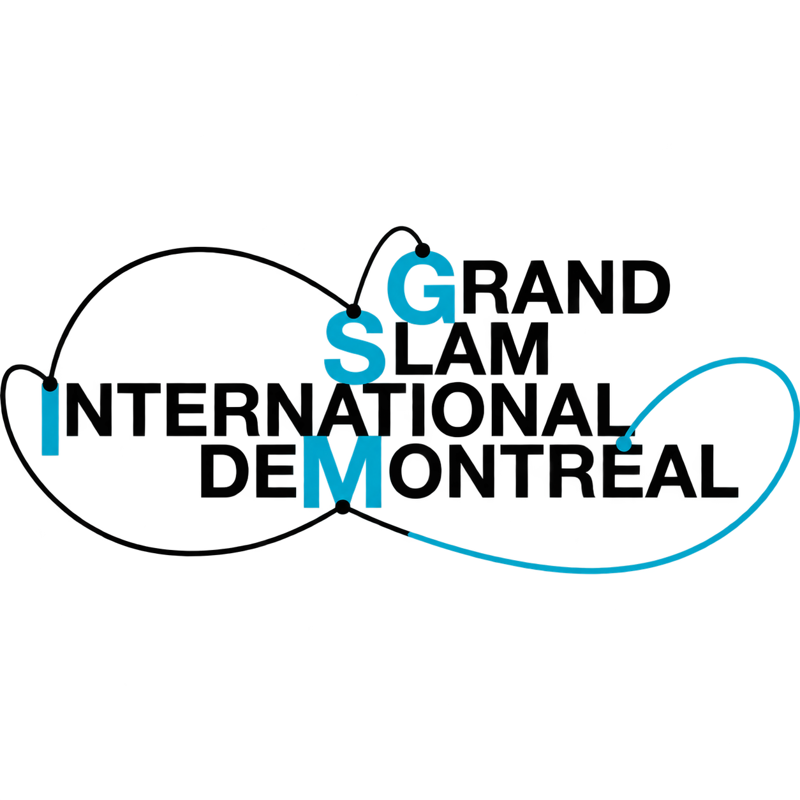

Soirée slam · Scénographie 2026
GRAND REMIX · LE MINISTÈRE
La parole.
La lumière.
L’image.
Explorez la scène, les lumières et la projection en 3D.
30 octobre 2026 Le Ministère, Montréal

Prévisualiser le spectacle
La salle en 3D
Choisir une ambiance. Cliquer sur un spot pour le régler.
Sur téléphone, « Ouvrir en grand » offre plus de place pour tourner autour de la scène.
Aperçu du spectacle. Implantation, optique et rendu réel à valider avec la salle.
Comment utiliser la maquette
La maquette 3D permet de visualiser la scène, d’essayer les ambiances et d’ajuster les éclairages avant le montage.
Comprendre les projecteurs
- Noir, sans contour coloré : spot éteint ou faisceau masqué dans l’aperçu.
- Contour mauve : spot actif.
- Contour vert : spot sélectionné pour le régler, même éteint.
- Boîtier rouge clair : appareil non utilisé pour le spectacle ; il reste éteint.
Ces repères ne changent pas la couleur du faisceau.
Ouvrir une rubrique pour consulter les explications, regroupées par thème.
01Ambiances
- Les huit ambiances
- Cliquer sur une ambiance pour la charger. Ce sont des suggestions à adapter au spectacle ; le passage se fait avec un fondu de 1,5 seconde, sans déplacer la caméra.
- Rejouer
- Relance l’ambiance sélectionnée depuis le début.
- Lire les ambiances / Arrêter le défilement
- Enchaîne les huit propositions dans l’ordre, avec leurs durées enregistrées ; le second clic arrête l’enchaînement.
- Compteur et état
- Indiquent la position dans le cycle, sa durée et si l’ambiance a été ajustée.
02Régler un spot
Choisir et modifier un spot
- Spot à régler
- Choisir un numéro dans la liste ou cliquer sur un spot en 3D. Seuls les paramètres disponibles sur ce type d’appareil apparaissent.
- Annuler / Rétablir
- Annule ou rétablit une modification dans l’ambiance en cours, y compris une copie à plusieurs lampes. Raccourcis : Ctrl+Z et Ctrl+Maj+Z.
- Intensité du spot
- Règle sa luminosité de 0 à 100 %.
- Couleur et carrés de couleur
- Choisir une teinte de la palette ou une couleur personnalisée pour les appareils RGB. Les lyres utilisent leur roue de couleurs ; les appareils blancs restent blancs.
- Blanc — allumer / Noir — éteindre
- Rallume en blanc à pleine intensité ou éteint le spot.
- Rétablir ce spot
- Remet le spot aux réglages de base. Si un bloc est sélectionné dans une séquence active, remet ce bloc aux réglages de base.
- Enregistrer (à côté de Rétablir ce spot)
- Enregistre l’ambiance complète avec les réglages du spot et de sa séquence dans ce navigateur. Met à jour l’ambiance sélectionnée ou en crée une personnelle. Les autres sauvegardes se gèrent dans Mes ambiances.
Mouvement et gobos des lyres
- Mouvement
- Fixe, balayage horizontal, vertical, ellipse ou huit : choisit le parcours du faisceau.
- Motif du gobo
- Choisit un motif projeté. Ouvert donne un faisceau sans motif.
- Pan / Tilt
- Pan oriente latéralement ; Tilt incline le faisceau. Ce sont les angles de la maquette, à calibrer sur les appareils réels.
- Zoom
- Règle l’ouverture du faisceau entre 10 et 23°.
- Rotation gobo
- Règle le sens et la vitesse de rotation du motif ; 0 l’arrête.
- Amplitude / Durée d’un cycle
- Amplitude règle l’étendue du mouvement ; une durée plus longue ralentit le parcours.
Séquence du spot
- Activer la séquence
- Fait jouer les carrés du spot en boucle. Les réglages de couleur, d’intensité, de mouvement et de gobo modifient alors le carré sélectionné.
- Ajouter / Dupliquer / Retirer
- Ajoute un bloc avec les réglages actuels, copie le bloc sélectionné ou le supprime. Maximum : 10 blocs et 30 secondes. Ajouter reste cliquable ; à 10 blocs, un message invite à en retirer un. Si les 30 secondes sont remplies, les durées se répartissent.
- Carrés et flèches gauche / droite
- Cliquer sur un carré pour le modifier. Les flèches déplacent ce bloc dans la séquence.
- Durée du bloc
- Temps du carré en secondes. Les boutons 0,5 / 1 / 2 / 4 / 8 s servent de raccourcis ; le total est affiché sous les carrés.
- Coupe / Fondu / Fade-in
- Coupe change le réglage immédiatement. Fondu permet une entrée progressive, dont Fade-in règle la durée en secondes.
- Fade-out
- Durée de la baisse d’intensité à la fin du bloc ; 0 conserve une fin immédiate.
- Flash / Régulier / Variable ~5 s
- Sans flash désactive l’effet. La fréquence en Hz règle le nombre de flashs par seconde ; Régulier les espace uniformément, Variable crée des accents espacés. Les options 4 et 8 Hz sont réservées à SL1 dans l’aperçu.
- Allumer seulement les accents
- En mode Variable, éteint le spot entre les accents.
- Rejouer / Pause / Reprendre
- Relance la séquence depuis le début ou suspend et reprend l’animation des effets.
Copier et consulter
- Appliquer aux lampes du même type
- Copie les réglages et la séquence aux autres lampes utilisables du même modèle. Le nombre de destinataires est indiqué.
- Inclure l’orientation
- Copie aussi le Pan et le Tilt. Décoché, chaque lampe conserve son orientation.
- Capacités et source
- Explique les limites du modèle ; Documentation ouvre sa source fabricant.
03Brouillard
- Démarrer / Arrêter la machine
- Démarre ou coupe l’émission F1. Après l’arrêt, la brume déjà présente se dissipe progressivement.
- Quantité de brouillard (0 à 7 %)
- Le débit visuel est limité à 7 % maximum, y compris avec une sauvegarde ancienne ou un fichier importé. « Bleu océan » est réglé à 6 %. Il s’agit d’un pourcentage de simulation, pas d’une consigne DMX physique.
- Vider le brouillard
- Arrête la machine et retire immédiatement toute la brume, en conservant le pourcentage choisi.
- État de la machine
- Indique si elle émet ou si la brume se dissipe. Le brouillard révèle les faisceaux et atténue la projection selon le trajet traversé ; le rendu réel reste à vérifier en salle.
04Commandes
- Réinitialiser la salle
- Revient au départ : spots utilisables blancs à 100 %, S6 et 112 éteints, DJ 201 à 45 %, brouillard arrêté, public masqué et vue d’ensemble. Conserve les ambiances enregistrées.
- Noir spectacle
- Éteint les spots et la projection ; conserve le bar et l’éclairage du poste DJ. Le spot 201 reste réglable.
- Allumer / Éteindre le projecteur
- Affiche ou coupe l’image projetée.
- Entrée / Sortie de l’artiste
- Anime le trajet entre la coulisse et la scène. L’état affiché indique sa position ; les boutons sont momentanément indisponibles pendant le déplacement.
05Mes ambiances
- Nom du thème / Ajouter une ambiance
- Dans « Mes ambiances », saisir un nom pour créer une ambiance personnelle avec les réglages et la vue actuels. Les sauvegardes restent dans ce navigateur.
- Ambiances personnelles enregistrées
- Choisit la sauvegarde à afficher, remplacer ou prendre comme départ de lecture.
- Afficher / Remplacer
- Afficher charge la sauvegarde avec sa vue. Remplacer la met à jour avec les réglages et la vue actuels.
- Retirer / Rétablir la dernière ambiance retirée
- Retirer enlève la sauvegarde sélectionnée de la liste. Rétablir permet de la récupérer ; les huit ambiances principales restent disponibles.
- Durée par scène
- Règle le temps de lecture entre 2 et 30 secondes. « Ajouter une ambiance » ou « Remplacer » conserve cette durée.
- Lire mes ambiances / Pause / Reprendre / Arrêter
- Enchaîne les scènes personnelles à partir de la sélection. Pause suspend l’enchaînement ; Reprendre le poursuit, Arrêter y met fin. Pour figer aussi les effets, décocher Animation des effets.
06Vue et repères
- Cadence 3D
- Auto adapte la cadence jusqu’à 30 images/s ; 60 FPS privilégie la fluidité si l’appareil le permet. Les ombres, gobos et la résolution restent conservés. Le relevé indique la cadence mesurée et la résolution.
- Intensité d’ambiance
- Ajuste globalement la luminosité de l’aperçu.
- Faisceaux des spots (brouillard)
- Affiche leur trajet dans la brume ; il devient plus visible quand la quantité de brouillard augmente.
- Faisceau vidéo (repère)
- Affiche les limites géométriques de projection pour repérer son trajet.
- Repères humains
- Affiche ou masque les silhouettes du public, masquées au départ. Leur nombre n’indique pas la capacité autorisée de la salle.
- Repères du plan
- Affiche ou masque les étiquettes des équipements et des zones.
- Souligner toutes les barres
- Met en évidence les barres d’accroche.
- Afficher les appareils LX
- Affiche ou masque les appareils d’éclairage et leurs faisceaux dans l’aperçu.
- Murs et plafond
- Affiche ou masque l’enveloppe de la salle.
- Trajet depuis la coulisse
- Affiche ou masque le repère du passage de l’artiste.
- Animation des effets
- Met en pause ou relance les mouvements, les séquences et le visuel.
07Importer
- Importer des ambiances
- Charger un fichier JSON de cette maquette. Les ambiances connues sont mises à jour, les nouvelles ajoutées et les identiques conservées sans doublon. Les autres ambiances restent présentes. Un bilan indique les mises à jour et les ajouts ; un fichier incompatible est refusé.
- Télécharger mes réglages
- Permet de conserver une sauvegarde de l’état actuel avant l’import.
08Exporter
- Créer une vidéo d’ambiance
- Calcule un aperçu depuis les paramètres choisis, en arrière-plan, sans devoir le faire jouer à l’écran. Une ambiance seule dure jusqu’à 30 secondes. Si Lire les ambiances est activé, exporte les huit dans l’ordre, depuis le début, avec leurs durées et leurs fondus : jusqu’à 4 minutes.
- Création de la vidéo / Annuler / Télécharger
- L’aperçu se met en pause et la progression apparaît à l’écran. Annuler interrompt le calcul. Le fichier final se télécharge sans son en MP4, ou en WebM selon le navigateur ; le lien permet de le télécharger à nouveau.
- Enregistrer la vue
- Télécharge une image de la vue 3D actuelle.
- Exporter en GLB
- Télécharge la géométrie 3D pour un logiciel compatible. Les séquences et les vidéos n’y sont pas exportées comme animations.
- Télécharger mes réglages
- Sauvegarde toutes les ambiances, les scènes personnelles, les séquences et les changements en cours dans un fichier JSON à conserver ou transférer.
Plans pour préparer le montage
Les plans techniques
9 planches · A3 paysage. Implantation : 1–6 · Appareils et ambiances : 7–8 · Brouillard et validation : 9.

Pour consulter le document, ouvrir cette planche dans le PDF ↗. Le fichier téléchargé contient les neuf planches.
Avant le montage
À confirmer avec le DT
Les points à valider pour préparer le montage et la conduite lumière.
Placer le projecteur
Plan 4 · Projection ↗- Identifier la lentille installée sur le Panasonic PT-RZ770.
- Vérifier le recul, le cadrage et les dégagements ; garder le projecteur hors du bar.
À confirmer : la position P1 sur B4 est une hypothèse, à vérifier en salle.
Mesurer l’écran
Plan 9 · Écran et dimensions ↗Tissu blanc léger traité ignifuge, sur un cerceau en PVC de ¾ po.
- 12 pi de tube (3,66 m) correspondent à un diamètre théorique de 1,16 m.
- Poids estimé : 1,4 à 1,8 kg, sous les hypothèses ci-dessous. Peser l’ensemble monté.
À mesurer : les plans et la maquette utilisent encore un écran de 2 m, avec une réserve de 2,10 m. La mesure réelle permettra d’ajuster l’implantation, le masque vidéo et le calcul optique.
Détail de l’estimation du poids
Hypothèse : PVC nominal ¾ po Schedule 40, environ 1,15 kg pour 12 pi. Tissu 100–180 g/m² : 0,12–0,21 kg, marge de 10 % incluse. Raccord et assemblage : 0,15–0,35 kg. Tube et tissu à identifier ; diamètre théorique hors raccord et épaisseur du tube. Référence du tube.
Valider les accroches et les passages
Plans 1–3, 5 et 9 · Implantation ↗Principe retenu par l’organisation : écran suspendu au plafond par monofilament transparent (fil de pêche).
- Valider B1 pour l’écran, l’accroche du projecteur, les supports, les charges admissibles et la disponibilité des barres.
- Documenter les ancrages, les caractéristiques du fil, la sécurité secondaire.
- Mesurer le bar et les poteaux ; vérifier les dégagements et le passage des artistes depuis la coulisse.
Le principe retenu ne vaut pas validation technique du montage.
Préparer la lumière
Plans 6–9 · Lumière et ambiances ↗- Confirmer les 6 PAR proposés.
- Obtenir l’accord pour déposer 106 et le Zoom 5 : le kit de la salle est annoncé fixe.
- Régler les focus, les mouvements et les flashs en protégeant la projection.
Direction artistique : les huit ambiances sont des suggestions à adapter au déroulé, pas une conduite définitive.
À tester sur place : les débordements devant et derrière la toile, avec des mires blanche puis noire. Les protections montrées en 3D restent à programmer et à vérifier en salle.
Sources et portée du dossier
Sources attestées du projet · vérification du 8 octobre 2026.
Salle et matériel
- Fiche Audio-LX du Ministère — dimensions, inventaire, plans p. 7–8, PT-RZ770 et Chief VCMU.
- Panasonic PT-RZ770 — Spec File — recul et lentilles. Accès au lien source momentanément non reconfirmé.
- Chauvet Intimidator 375Z IRC — zoom, mouvements, couleurs et gobos.
- Chauvet COLORado 1-Tri Tour — RGB, faisceau et champ.
- ETC Source Four / documentation — découpes et Zoom.
- Rosco DMG MINI / SL1 MIX / profils DMX — couleurs et strobe.
- Antari F-1 — consignes ; version F-1W de la salle à confirmer.
- Charlotte Pipe · PVC Schedule 40, p. 28 — base de calcul du poids du cerceau. Référence de tube hypothétique, modèle fourni non identifié.
- CNESST · Guide de prévention, arts de la scène — repères de préparation ; montage et accroche à valider avec la salle.
- Antari F-1 et Rosco — comportement du brouillard : diffusion et circulation de l’air. Le volume 3D reste une illustration.
- Physically Based Rendering · transmission dans un milieu diffusant — atténuation de la projection dans le brouillard ; adaptation simplifiée pour la maquette.
Les 7 motifs de gobos viennent du manuel Chauvet, p. 7. Le jeu installé est à vérifier avec la salle.
SL1 · strobe : le patch salle à 4 canaux ne possède pas de canal strobe dédié. Le profil Full 8b / 12 canaux le permet ; son utilisation est à confirmer avec le DT. Voir les profils DMX Rosco ci-dessus.
Vidéos filmées · Mixkit
- Bleu océan · vagues · 5016
- Soleil · plage au coucher du soleil · 2168
- Pinky love · gouttes sur roses roses · 100900
- Rouge intense · flammes · 3754
- Calamine · marche urbaine en première personne — Edgar Fernandez, Mixkit 40741
Mixkit Stock Video Free License : adaptation, usage commercial et diffusion autorisés ; attribution non obligatoire, sous conditions Mixkit. Sources brutes non redistribuées en banque de vidéos.
Finale · Calamine
Références : biographie officielle · Bravo musique, Rétrograde · liens officiels et Instagram de Calamine. Animation originale DMTeam : graff animé sur une marche urbaine filmée, lettrage Sedgwick Ave Display (SIL OFL), palette sobre et contrastée ; aucun clip, portrait ou extrait sonore de l’artiste réutilisé.
Visuels et polices
Collage rouge : création fictive avec imagegen, superposée au feu filmé. Logo fourni par l’organisatrice, détouré et animé. Photo d’écran fournie comme référence visuelle, sans mesure étalon.
Cormorant, Caveat, DynaPuff, Great Vibes, Anton : SIL OFL 1.1, licences incluses. Arial/Helvetica et Impact : polices système. Arial est utilisée dans le PDF.
Logiciels et export
Three.js + OrbitControls (MIT) ; Mediabunny 1.61.3 (MPL-2.0, source disponible). Références : API Mediabunny, Chrome / MediaRecorder.
Outils locaux, non embarqués : esbuild (MIT), FFmpeg 8.0 / ffprobe (build GPL-3.0-or-later), ReportLab 4.4.9 et pypdf 6.10.0 (BSD-3-Clause), Pillow 12.3.0 (MIT-CMU).
Portée et validation DT. Le gabarit d’écran de 2 m des plans et de la maquette reste à réviser après mesure : les 12 pi de tube annoncés donnent un diamètre théorique d’environ 1,16 m. Architecture estimée ; boîtier F1 indicatif. Lentille installée inconnue : P1 / ET-DLE150 restent une proposition. Accroches, dégagements, PAR S1–S6 proposés, 8e Source Four non localisé et patch/modes DMX à confirmer. Lumière et brouillard sont des prévisualisations, sans calcul physique certifié. Les 20 silhouettes ne représentent pas une capacité autorisée.